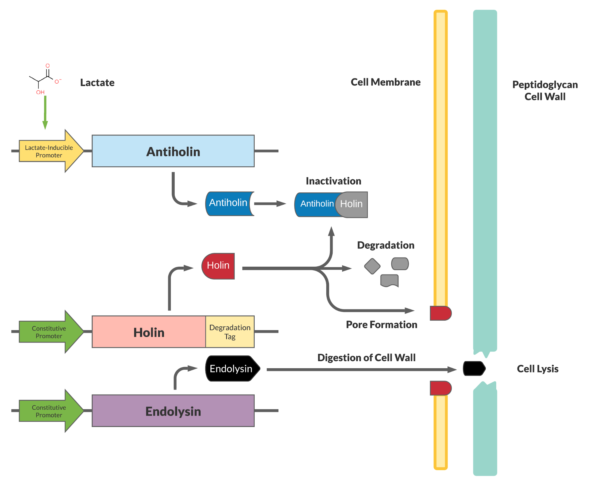
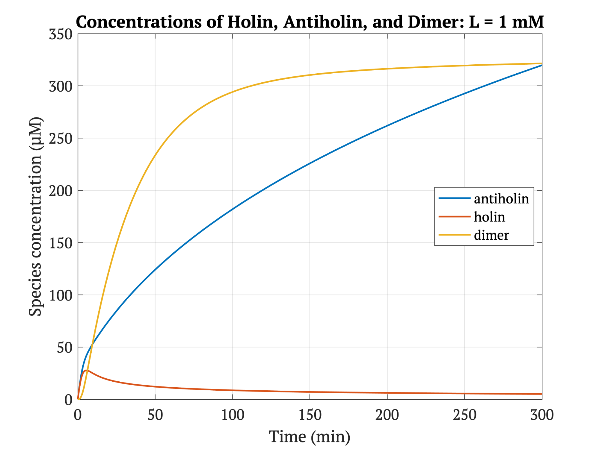
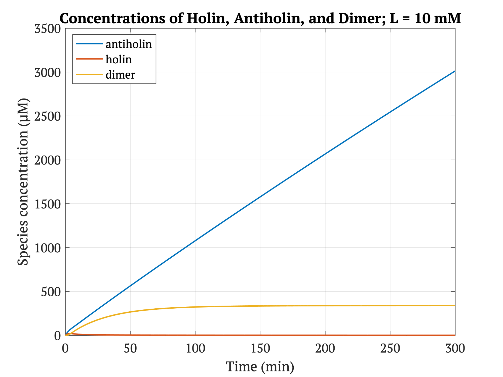
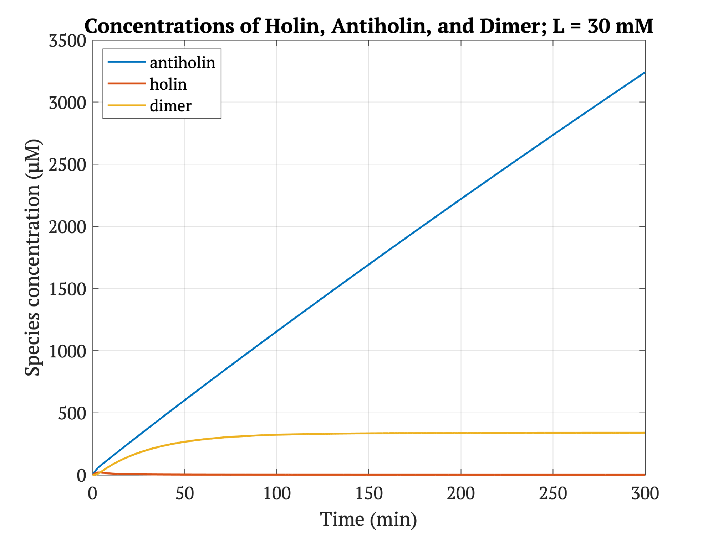
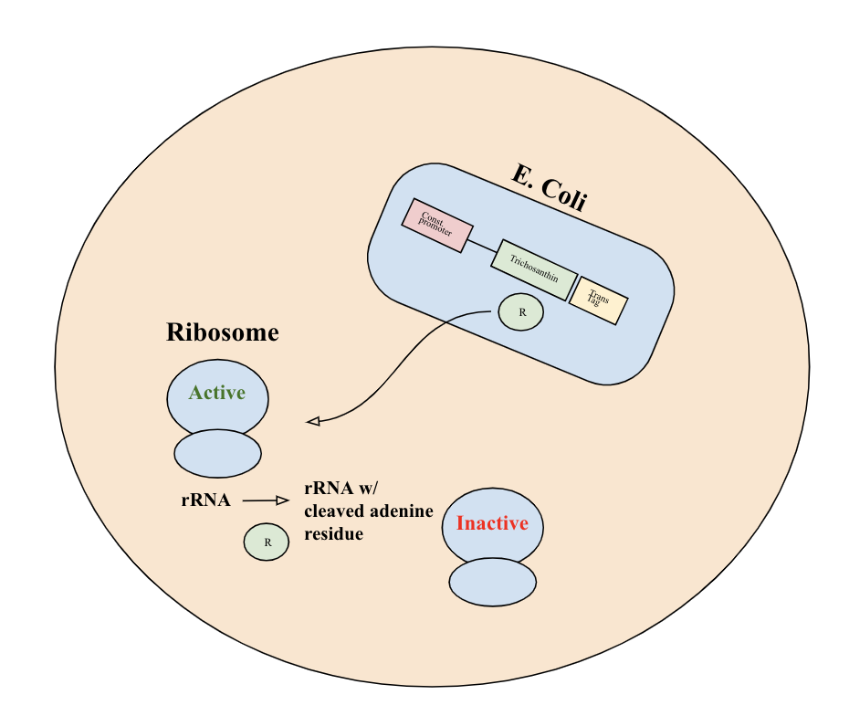
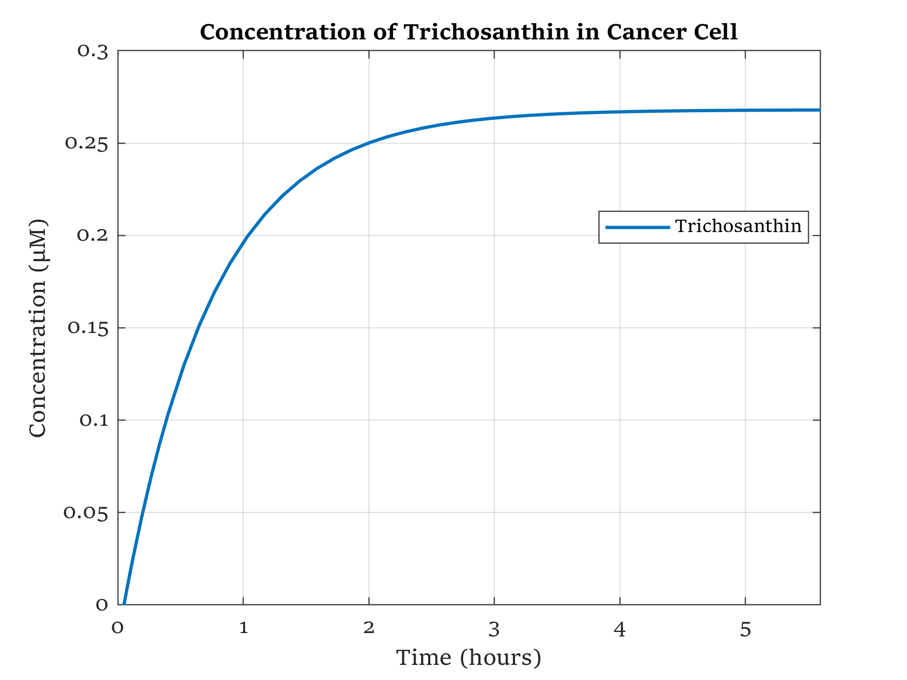
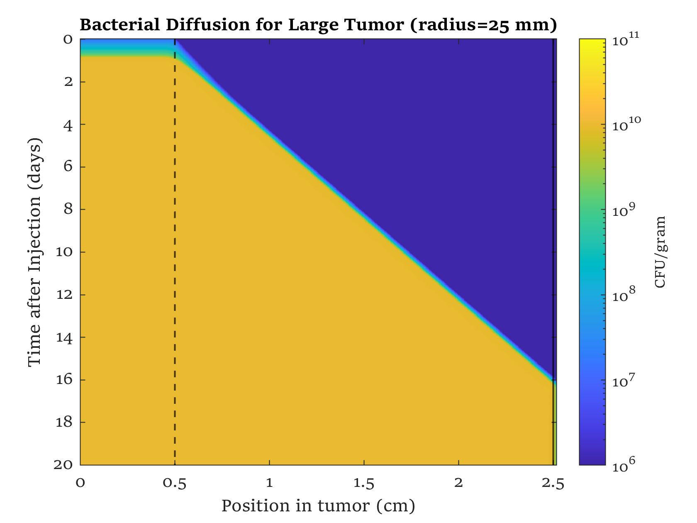
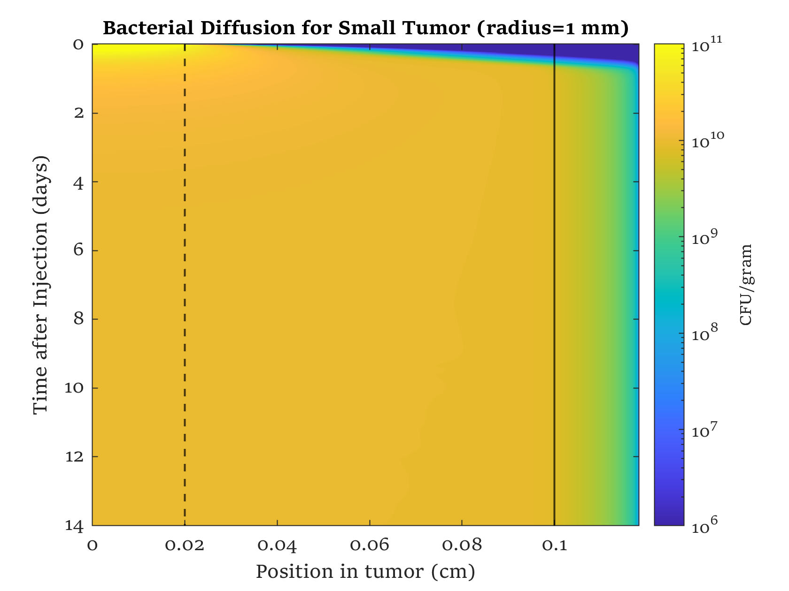
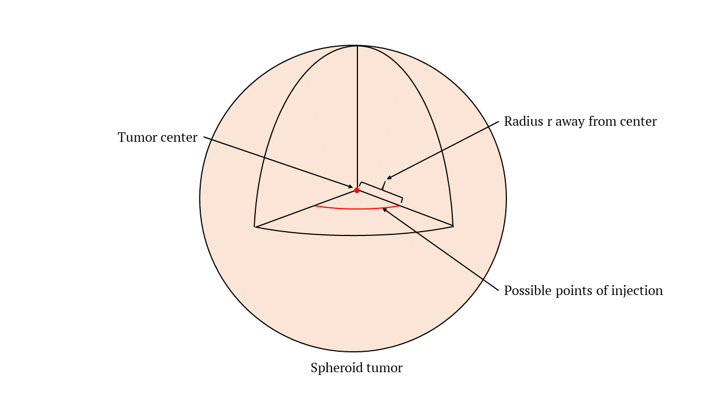

Our kill switch consists of a holin-antiholin toxin-antitoxin system. The holin protein creates holes in the bacterial cell membrane, which allows endolysin protein to pass through and degrade the cell wall, killing the cell. The antiholin protein binds to the holin protein, inactivating it. When both proteins are expressed, whether the cell dies depends on the relative concentrations of both the holin and antiholin components [1].
 Figure 1. This depicts the kill switch mechanism using a Holin/Antiholin toxin-antitoxin system, where E. coli are kept alive in a high concentration of lactate. The kill switch consists of three different proteins: holin, antiholin and endolysin. Holin creates holes in the cell membrane, allowing endolysin to then pass through these holes to degrade the peptidoglycan found in the cell wall. Antiholin binds to holin to create an inactivated dimer, preventing holes from being formed in the first place [2].
This expression of antiholin is designed to be controlled by a lactate-inducible promoter, as research shows that lactate concentrations are higher in tumor environments (10-30 mM) compared to healthy tissue (1.5-3 mM) due to increased aerobic glycolysis in proliferating cancer cells [3]. The toxin, holin, is constitutively expressed. When in the presence of high lactate, enough antitoxin (antiholin) is produced to significantly counteract holin. Otherwise, antiholin is not sufficiently produced, and the bacteria will lyse and die. This allows the bacteria to localize and survive in tumor cells, and die in other environments (ie. healthy human tissue) even without phagocytosis by the immune system.
Figures 2-4 show the concentrations of holin, antiholin, and the inactivated holin-antiholin dimer at different levels of lactate. At a lethal concentration of 1.66 μM, holin kills the bacterial cell [1,3]. Whether holin reaches this level depends on the relative concentration of antiholin, whose expression is influenced by the lactate level of the surrounding environment.
 Figure 2. At 1mM, a very low level of lactate (L) that would be expected outside of the tumor environment, the steady-state concentration of holin is 5.47 μM. This is above the lethal threshold, and therefore indicates that under these conditions, the bacteria will not infiltrate healthy tissue.  Figure 3. At 10 mM, which is towards the lower end of the tumor lactate level (L) range, the steady-state concentration of holin is 0.59 μM, which is below the lethal threshold, so the bacterial cells will persist and proliferate.  Figure 4. At 30 mM, a high level of lactate (L) that would be expected in the tumor environment, the steady-state concentration of holin is 0.54 μM. The bacterial cell likely survives.
The purpose of our kill switch is to serve as a backup for immune selection, which generally destroys E. coli in most healthy tissues. However, the kill switch provides additional security that bacteria will localize and survive selectively in high-lactate environments such as tumor cells, and die in other environments like healthy human tissue. The figures above demonstrate the concentrations of holin, antiholin, and the inactivated holin-antiholin dimer at different levels of lactate. They reveal that the kill switch is sensitive to the differences between healthy and cancerous tissue.
Since E. coli tend to localize to the interior of tumor cells [6], we decided to use an intracellular cancer therapeutic protein: trichosanthin, a weaker relative of the toxin ricin, is a small, ribosome-inactivating protein derived from the tuber vegetable Trichosanthes kirilowii, also known as the Chinese cucumber. It has traditionally been used in Eastern traditional medicine as an abortifacient, and also functions as an antitumor agent [7]. Trichosanthin works by inhibiting the 60S subunit of eukaryotic ribosomes, stopping protein synthesis in the (eukaryotic) tumor cells, eventually killing them. Because prokaryotic ribosomes are not affected by trichosanthin, the E. coli cells remain safe. It is produced constitutively by the engineered bacteria upon entry, and is exported into the cytoplasm of the tumor cells, inactivating mammalian ribosomes. Since trichosanthin acts by inhibiting protein synthesis, its cytotoxic effects will be most deleterious to fast-growing cancer cells [8]. Additionally, our addition of a translocase tag allows for more efficient export of trichosanthin from the bacteria into the cytoplasm of the tumor cell [9].  Figure 7. Trichosanthin is an inhibitor of protein synthesis that acts on mammalian ribosomes. Upon release into the cell, it exhibits RNA N-glycosidase activity and depurinates the 28S rRNA of the 60S eukaryotic ribosomal subunit. This will achieve irreversible inactivation of ribosome activity and inhibit tumor cell function.
Figure 8 shows that the E. coli are able to produce a sufficient concentration of trichosanthin to kill the cancer cells given that about one hundred bacteria will colonize in one cell according to our growth modeling. Each bacteria causes a concentration increase of 268 nM, which implicates a total of 26.8 μM of trichosanthin in the cancer cell, which is significantly higher than the IC50 of 1.57 μM. A breast cancer study in mice showed that trichosanthin administered intravenously at 0.185 μM significantly slowed cancer proliferation[9]. Since Trichotherapy applies a much higher concentration than this effective chemotherapy concentration as well as the IC50, it would likely destroy cancer cells and significantly reduce tumor size. We do not expect the high concentration to be harmful as our built-in kill switch is an added safety defense to limit bacterial spread outside of the tumor.  Figure 8. This plot depicts the concentrations of trichosanthin protein over time. Trichosanthin is exported into the cancer cell from the E. coli approximately three minutes after initial production. After five minutes, the trichosanthin in the cancer cell reaches a steady-state concentration of 268 nM per each bacterium inside the cell.
To predict the maximum Trichotherapy colonization for trichosanthin and mCardinal modeling, the typical bacterial density from literature was calculated. According to Duong et. al, bacteria can easily reproduce within the tumor environment, reaching a concentration of 1 × 1010 CFU/g after three days [10]. According to Monte, there are approximately 1 × 108 cancer cells in every gram of tumor; these two values gives us an approximation of 100 E. coli cells per tumor cells (assuming one CFU equals one cell) [11].
To examine the longevity and spread of Trichotherapy in both healthy and cancerous tissue, we modeled bacterial growth within a tumor environment for both a small tumor (1 mm radius) and large tumor (25 mm radius) and its surrounding boundary conditions. According to Children’s Hospital, when the tumor reaches a 1 mm radius, healthy cells still inside the spheroid tumor begin to die [12]. This small tumor size can also be representative of a metastasis. On the other hand, a 25 mm radius tumor would be representative of a stage 3 tumor to give a contrast of how bacterial growth would look like in a more severe case of cancer. an intracellular cancer therapeutic protein: trichosanthin, a weaker relative of the toxin ricin, is a small, ribosome-inactivating protein derived from the tuber vegetable Trichosanthes kirilowii, also known as the Chinese cucumber. It has traditionally been used in Eastern traditional medicine as an abortifacient, and also functions as an antitumor agent [7]. Trichosanthin works by inhibiting the 60S subunit of eukaryotic ribosomes, stopping protein synthesis in the (eukaryotic) tumor cells, eventually killing them. Because prokaryotic ribosomes are not affected by trichosanthin, the E. coli cells remain safe. It is produced constitutively by the engineered bacteria upon entry, and is exported into the cytoplasm of the tumor cells, inactivating mammalian ribosomes. Since trichosanthin acts by inhibiting protein synthesis, its cytotoxic effects will be most deleterious to fast-growing cancer cells [8]. Additionally, our addition of a translocase tag allows for more efficient export of trichosanthin from the bacteria into the cytoplasm of the tumor cell [9].
The models showed that the bacteria, and consequently the therapeutic, are able to localize within both of the tumor sizes. This analysis was useful as the small tumor size would be an appropriate model for applying our treatment to a small metastasis. Namely, bacterial growth stops when outside the tumor, ensuring that no therapeutic will be produced outside the tumor environment and harm healthy cells. This occurs because of the lactate concentration-based kill switch we incorporated as well as the body’s natural immune system attacking the foreign bacteria.
For mathematical modeling purposes, the boundary conditions were set according to the relative amount of vasculature in breast tissue, where the nearest blood vessel to the tumor was assumed to be 25 + 1/√30, since there are an average of 30 vessels/ mm2, then 1/√3 mm on average per vessel [13]. Based on the results, we found that our treatment can potentially be effective in the long-term; one time administration of the treatment could allow the bacteria to constantly produce therapeutic until the tumor shrinks and eventually disappears
The following graphs describe the growth of bacteria over time inside two different sizes of tumors. The x-axis moves away from the center of the tumor as the y-axis moves forward in time the further down the graph. Our scale measures the density of bacterial cells in the tumor ranging from 106 CFU/gram (indicated by the dark blue) to 1011 CFU/gram (indicated by the bright yellow). Our results suggest that the bacteria, and subsequently the therapeutic, are able to maintain a high cell density, which indicates that the bacteria do localize and live within the tumors. Though this model assumes negligible change in radius over a span of three weeks, the results also suggest that this treatment can work in the long-term; after just one injection, the bacteria will constantly make therapeutic over time, causing the tumor to shrink and eventually disappear. For the smaller tumor, the graph shows a further diffusion of bacteria outside the boundary of the tumor compared to the graph of the large tumor. This is due to the small radius of the tumor relative to the point of injection inside the tumor  Figure 9. Upon injection into a large tumor with a 25 mm radius, bacteria reached a maximum density of 1010 CFU/gram and maintain a steady population throughout the tumor. Growth modeling showed a quick drop off of bacterial density at the edge of the tumor. The dotted vertical line depicts the point of injection, and the solid vertical line depicts the edge of the tumor.  Figure 10. Upon injection into a small tumor with a 1 mm radius, bacteria reaches a maximum of 1010-1011 CFU/gram and keeps a steady population. Growth modeling shows a shallow decline in bacterial density at the edge of the tumor. The dotted vertical line depicts the point of injection, and the solid vertical line depicts the edge of the tumor.  Figure 11. This diagram shows the intended mode of delivery for our bacterial therapeutic. In a spherical model tumor, the bacteria would be injected inside the tumor at a point located a radius r away from the center of the tumor
Another consideration in our project was ensuring the retention of the engineered plasmids within our bacteria. Because the plasmid adds burden to the cell’s metabolic processes, bacteria that carry the plasmid would be selected against [14]. In order to prevent the plasmid from being lost with the growth of the bacterial population, we will use the Lambda Red plasmid system to knock out the Aspartate-semialdehyde dehydrogenase (Asd) gene, which is essential for survival, from the bacterial chromosome [15]. The Asd gene will then be added to our engineered plasmid, making the plasmid required for survival and ensuring that it will be retained from generation to generation. Since our treatment is meant for the human body, we do not want to use traditional methods - such as antibiotic resistance - to ensure that our plasmid is propagated. This is because the human body cannot handle large amounts of antibiotics, especially given that patients are expected to undergo other cancer treatments combined with our therapy.
Studies have successfully used E. coli with knocked out Asd genes to create “antibiotic marker-free plasmids” [14]. It is worth noting that the Asd gene codes for a protein responsible for the synthesis of diaminopimelic acid (DAP) - a crucial component for the formation of bacterial cell walls. The absence of the Asd gene leads to the lysis of bacterial cells due to the formation of faulty cells walls. In one study, when plating the transformed bacteria on agar with DAP, the plasmid retention rate is found to range from 80-100% depending on the dilution factor [14].
[1] Savva, C. G., Dewey, J. S., Deaton, J., White, R. L., Struck, D. K., Holzenburg, A., & Young, R. (2008). The holin of bacteriophage lambda forms rings with large diameter. Molecular microbiology, 69(4), 784-793.
[2] Jie, W. (2014). BBa_K1378032. Retrieved October 13, 2020, from http://parts.igem.org/Part:BBa_K1378032
[3] De la Cruz-López, K. G., Castro-Muñoz, L. J., Reyes-Hernández, D. O., García-Carrancá, A., & Manzo-Merino, J. (2019). Lactate in the Regulation of Tumor Microenvironment and Therapeutic Approaches. Frontiers in oncology, 9, 1143. https://doi.org/10.3389/fonc.2019.01143.
[4] Chu, J., Haynes, R. D., Corbel, S. Y., Li, P., González-González, E., Burg, J. S., ... & Davidson, M. W. (2014). Non-invasive intravital imaging of cellular differentiation with a bright red-excitable fluorescent protein. Nature methods, 11(5), 572-578.
[5] Ash, C., Dubec, M., Donne, K., & Bashford, T. (2017). Effect of wavelength and beam width on penetration in light-tissue interaction using computational methods. Lasers in medical science, 32(8), 1909-1918.
[6] Nejman, D., Livyatan, I., Fuks, G., Gavert, N., Zwang, Y., Geller, L. T., . . . Straussman, R. (2020). The human tumor microbiome is composed of tumor type–specific intracellular bacteria. Science, 368(6494), 973-980. doi:10.1126/science.aay9189
[7] Li, M. X., Yeung, H. W., Pan, L. P., & Chan, S. I. (1991). Trichosanthin, a potent HIV-1 inhibitor, can cleave supercoiled DNA in vitro. Nucleic acids research, 19(22), 6309–6312. https://doi.org/10.1093/nar/19.22.6309
[8] Li, J., Li, H., Zhang, Z., Wang, N., & Zhang, Y. (2016). The anti-cancerous activity of recombinant trichosanthin on prostate cancer cell PC3. Biological research, 49(1), 21.
[9] Fang, E. F., Zhang, C. Z., Zhang, L., Wong, J. H., Chan, Y. S., Pan, W. L., . . . Ng, T. B. (2012). Trichosanthin Inhibits Breast Cancer Cell Proliferation in Both Cell Lines and Nude Mice by Promotion of Apoptosis. PLoS ONE, 7(9). doi:10.1371/journal.pone.0041592
[10] Duong, M.T., Qin, Y., You, S. et al. Bacteria-cancer interactions: bacteria-based cancer therapy. Exp Mol Med 51, 1–15 (2019). https://doi.org/10.1038/s12276-019-0297-0
[11] Del Monte U. Does the cell number 10(9) still really fit one gram of tumor tissue? Cell Cycle. 2009 Feb 1;8(3):505-6. doi: 10.4161/cc.8.3.7608. Epub 2009 Feb 11. PMID: 19176997.
[12] Tumor Metastasis Research. (n.d.). Retrieved October 13, 2020, from https://www.childrenshospital.org/research/labs/zetter-research-laboratory/tumor-metastasis-research
[13] Forbes, N. S., Munn, L. L., Fukumura, D., & Jain, R. K. (n.d.). Sparse initial entrapment of systemically injected Salmonella typhimurium leads to heterogeneous accumulation within tumors. Cancer Research, 63(17), 5188-5193.
[14] Shi, X., & Wang, J. (2015). Engineering and characterization of a symbiotic selection-marker-free vector-host system for therapeutic plasmid production. Molecular Medicine Reports, 12(3), 4669-4677. doi:10.3892/mmr.2015.3945
[15] Kenkel, B. (2016, December 15). Lambda Red: A Homologous Recombination-based Technique for Genetic Engineering. Retrieved October 13, 2020, from https://blog.addgene.org/lambda-red-a-homologous-recombination-based-technique-for-genetic-engineering